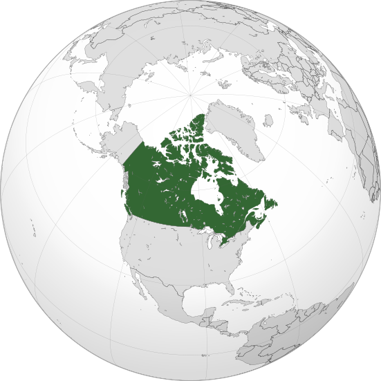
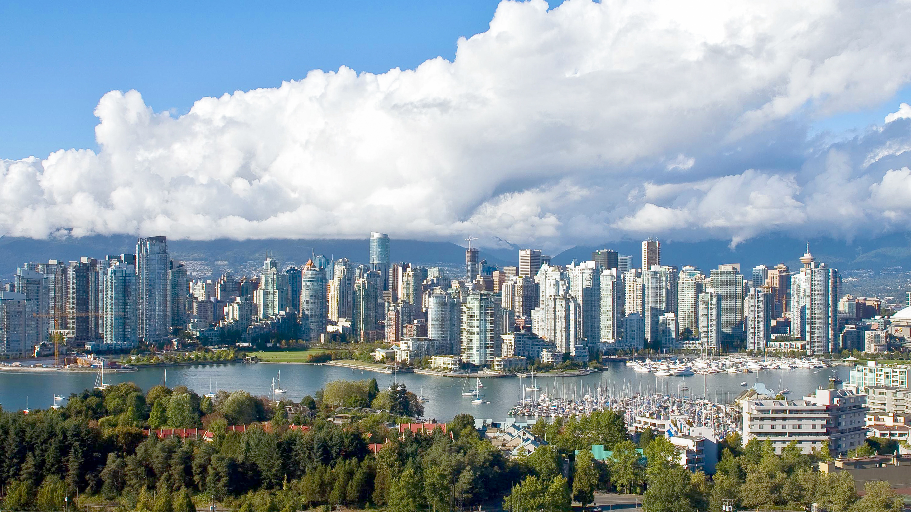

Scroll Down
"Canada is a country in North America. Its ten provinces and three territories extend from the Atlantic Ocean to the Pacific Ocean and northward into the Arctic Ocean, making it the world's second-largest country by total area, with the world's longest coastline. Its border with the United States is the world's longest international land border. The country is characterized by a wide range of both meteorologic and geological regions. With a population of over 41 million people, it has widely varying population densities, with the majority residing in urban areas and large areas of the country being sparsely populated. Canada's capital is Ottawa and its three largest metropolitan areas are Toronto, Montreal, and Vancouver.

Indigenous peoples have continuously inhabited what is now Canada for thousands of years. Beginning in the 16th century, British and French expeditions explored and later settled along the Atlantic coast. As a consequence of various armed conflicts, France ceded nearly all of its colonies in North America in 1763. In 1867, with the union of three British North American colonies through Confederation, Canada was formed as a federal dominion of four provinces. This began an accretion of provinces and territories resulting in the displacement of Indigenous populations, and a process of increasing autonomy from the United Kingdom. This increased sovereignty was highlighted by the Statute of Westminster, 1931, and culminated in the Canada Act 1982, which severed the vestiges of legal dependence on the Parliament of the United Kingdom.

Canada is a parliamentary democracy and a constitutional monarchy in the Westminster tradition. The country's head of government is the prime minister, who holds office by virtue of their ability to command the confidence of the elected House of Commons and is appointed by the governor general, representing the monarch of Canada, the ceremonial head of state. The country is a Commonwealth realm and is officially bilingual (English and French) in the federal jurisdiction. It is very highly ranked in international measurements of government transparency, quality of life, economic competitiveness, innovation, education and human rights. It is one of the world's most ethnically diverse and multicultural nations, the product of large-scale immigration. Canada's long and complex relationship with the United States has had a significant impact on its history, economy, and culture.

A developed country, Canada has a high nominal per capita income globally and its advanced economy ranks among the largest in the world by nominal GDP, relying chiefly upon its abundant natural resources and well-developed international trade networks. Recognized as a middle power, Canada's support for multilateralism and internationalism has been closely related to its foreign relations policies of peacekeeping and aid for developing countries. Canada promotes its domestically shared values through participation in multiple international organizations and forums."